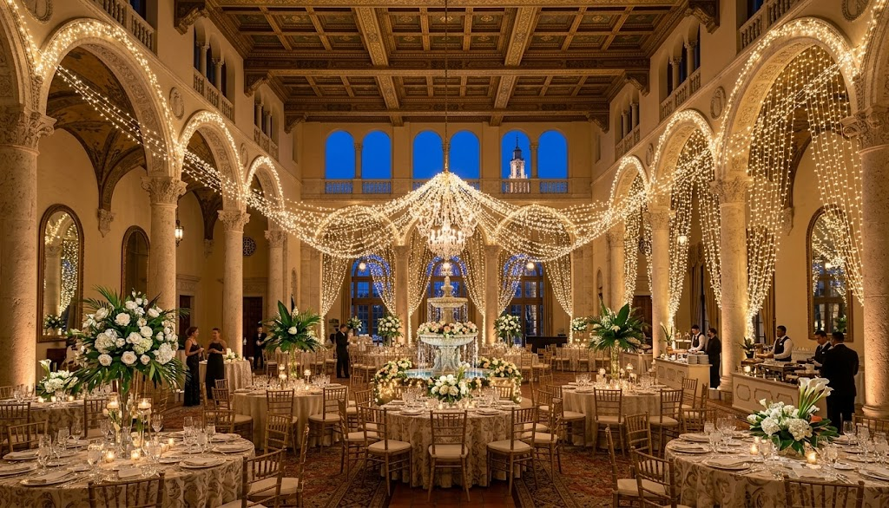

Built form & place
Florida Built
Architecture, development, landscape, construction, restoration, distinctive properties, and the ideas that shape the places where Floridians live and work.
P1Lab / Documentary Media
Florida, carefully documented.
A statewide documentary streaming channel exploring the people, places, industries, landscapes, and ideas that shape Florida through original films and carefully curated series. Serious documentary films and considered programming, available through supported streaming platforms.

 P1Lab Original / Documentary Series
P1Lab Original / Documentary Series
Featured Property / Natural History
Florida isn't a collection of underwater places. It's one connected world.
A six-film documentary series built around a different way of seeing Florida: tracing the hidden connections between its springs, rivers, mangroves, seagrass meadows and reefs. Beneath the surface, geology and moving water shape where wildlife lives, how it survives, and what happens when one part of the environment changes.
Rather than presenting underwater destinations one by one, Florida Below follows the relationships that make them part of a larger living landscape. Produced through Florida Field & Ocean, this is a proprietary documentary series designed to reveal not just what lies beneath Florida, but how that world works.
Explore the Documentary SeriesFlorida Field & Ocean / The idea
Florida is more than a destination or a market. It is a collection of landscapes, communities, industries, crafts, institutions, and ambitions—some celebrated, others rarely documented with the care they deserve.
Florida Field & Ocean is a documentary initiative built to make those stories visible. Its films examine the work itself: the decisions, knowledge, people, places, and material details that reveal why something matters.
From a major development or a remarkable hotel to a family farm, food producer, custom yacht, or distinctive cultural institution, each subject is approached as a story worth telling properly.
Programming / A state in many dimensions
The channel is statewide in outlook. Programming can emerge wherever a distinctive story, a compelling subject, or a committed partner makes a worthwhile production possible.
Architecture, development, landscape, construction, restoration, distinctive properties, and the ideas that shape the places where Floridians live and work.

Agriculture, specialty crops, farms, food producers, gardens, agritourism, land stewardship, and the knowledge behind what Florida grows and makes.

Hotels, resorts, destinations, cultural attractions, and distinctive experiences—documented through the people, design, and work that bring them to life.

Manufacturers, specialist trades, craftspeople, workshops, materials, and technical expertise essential to the state but often unseen.

Yacht construction, refit, restoration, marine engineering, fishing, coastal communities, and the skilled work that connects Florida to the water.

Visual artists, musicians, performers, writers, designers, architects, craftspeople, and the cultural lives built across the state.

Businesses, institutions, investment, infrastructure, innovation, and the people shaping the state's next chapter.
The subjects are varied. The standard remains consistent: clear editorial purpose, strong visual storytelling, informed research, and respect for the viewer's attention.

Florida Creates / Arts & culture
Florida Field & Ocean makes room for artists, musicians, performers, writers, architects, designers, and craftspeople whose work gives the state a cultural life as well as an economy.
Films can move from a quiet studio visit to a rehearsal, a performance, a conversation, or a portrait of a place through the eyes of the people who make its culture. The treatment is intimate and attentive: strong images, meaningful sound, and enough time for a person and their work to emerge.
The aim is not celebrity coverage. It is a lasting record of the imagination, skill, and individuality found across Florida.


The visual approach spans long-form documentaries, short portraits, performances, conversations, and sound-led observations of Florida's people and places.
The principle / Local in outlook. Serious in treatment.
Florida Field & Ocean takes the long view. It draws on the best traditions of arts-and-culture television and place-rooted human stories: attentive observation, strong visual composition, intelligent conversation, and sound that belongs to the subject. The aim is to make Florida's culture, expertise, enterprise, landscapes, and achievements available on demand—not to chase a national attention cycle.
Production / Editorial / Delivery
Florida Field & Ocean is produced through P1Lab's coordinated production operation, combining internal personnel with specialist production and post-production teams assembled according to the requirements of each project.
The collective experience available to our productions spans documentary filmmaking, broadcast, editorial, post-production, and digital media delivery. The production model draws on a broad range of professional experience, matching the team and workflow to the subject rather than imposing a single template on every film.
Each project is structured around its subject, research and access requirements, intended audience, production scope, and agreed deliverables. Editorial development, filming, sound, post-production, finishing, and delivery are coordinated as parts of a single production process.
We place the emphasis on the finished work and the capabilities required to deliver it. Project scope, production requirements, and relevant delivery arrangements are discussed directly with prospective commissioning partners.
The platform / Production plus participation
A commissioning partner helps bring a film into being and receives a defined package of usable media assets. The platform provides a curated on-demand home for the work and a broader editorial context beyond the partner's own website.
We shape a film around a project, place, process, enterprise, or body of expertise. Production is designed around the subject, not a generic corporate-video template.
Agreed deliverables can include a finished film, shorter edits, stills, a designed publication, and web-ready materials for meetings, presentations, premises, events, and digital communications.
With publication and usage rights defined in advance, authorized films can become part of the Florida Field & Ocean catalogue and be presented through a branded, on-demand viewing experience.
Distribution / Viewing environments
The distribution model is designed to support viewing across web browsers, mobile devices, and connected televisions. The intended reach includes the major environments below, subject to app deployment, platform approval, technical requirements, and service availability at launch.
Launching Q1 2027, Florida Field & Ocean is building a connected documentary media platform for web, mobile, and television.
Beyond the premiere / Made to be used
The platform is designed to make documentary work useful to the organizations that commission it—and available within a coherent Florida collection. Its planned model is free-to-view rather than subscription-based.
Use the film in a client meeting, sales presentation, investor conversation, or project briefing, subject to the agreed rights.
Make a documentary available in a showroom, visitor space, hotel, reception area, or other suitable setting.
Use approved versions across company websites, events, trade gatherings, partner communications, and follow-up with prospective clients.
Place the work in a curated documentary context that links individual organizations to the wider story of Florida.
From subject to screen
Every project begins with a worthwhile subject and a clear understanding of what the commissioning partner needs the finished work to do.
Identify the story, the people and places involved, the intended viewers, and the business or institutional uses the production should support.
Establish the point of view, interview approach, visual plan, research requirements, access, and production scope.
Coordinate filming, interviews, research, location sound, music, editing, titles, captions, and any companion photography or publication included in the commission.
Deliver the agreed assets and publish the authorized version within the platform, with rights, approvals, and permitted uses clearly established.
Participation / The people who make the record possible
Florida Field & Ocean brings together organizations with meaningful stories and a shared interest in documenting the state well. Participation is structured around commissioned work, clear deliverables, and an editorial platform with a consistent identity.
Developers, yacht builders, hotels, farms, manufacturers, destinations, and other organizations whose projects, knowledge, or work merit a substantial documentary treatment.
Companies, institutions, and regional or industry organizations that wish to support a body of programming, a subject collection, or a stronger documentary record of Florida.
The aim is not to turn the channel into an inventory of advertisements. Partners fund valuable production; the editorial treatment gives each film a reason to be watched beyond the transaction that made it possible.
Florida Field & Ocean / Begin a conversation
We welcome conversations with commissioning partners, institutions, and potential founding partners. Start with the subject, project, place, or expertise you believe deserves a considered documentary record.
Project status & image disclosure
Florida Field & Ocean is a P1Lab documentary media initiative devoted to the places, people, environments, and material culture of Florida.
For this project, documentary integrity governs the image-making process. Original image conception, art direction, photography, documentary footage, and visual asset selection are human-directed. Generative tools are used only for defined post-production tasks: compositing, including the creation of backgrounds and the integration of two or more existing images, and mastering. They are not used to originate visual concepts, direct photography, or generate documentary source imagery.
The visual fields shown here communicate the intended composition, subject matter, and presentation of the finished work. Final programming, platform deployment, distribution, and partner participation are established for each production. Viewing availability depends on the selected platforms, technical requirements, applicable approvals, and written agreements. Partner usage rights are defined separately for each production.